La Chine pratique
Conseils et retour d'expérience après trois semaines en Chine
Pendant notre voyage, nous avons noté les détails qui rendent un séjour en Chine plus simple, mais aussi les petites surprises auxquelles on ne pense pas toujours avant le départ. Cette page rassemble ces informations pratiques, avec des exemples et des photos prises sur place.
🏨 Réserver les hôtelsBooking.com, hôtels acceptant les étrangers et choix des établissements ›
La plateforme que nous avons utilisée le plus souvent est Booking.com, qui propose un très grand choix d'établissements et permet généralement une annulation gratuite jusqu'à quelques jours avant l'arrivée.
En Chine, les hôtels doivent être autorisés à accueillir des étrangers. Ce n'est pratiquement plus un problème dans les grandes villes ni sur Booking, mais il peut encore arriver que certains petits établissements n'acceptent que des clients chinois. Il est donc préférable de réserver via une plateforme internationale permettant de vérifier que les voyageurs étrangers sont bien acceptés.
🌐 Internet en ChineGreat Firewall, VPN et itinérance Free Mobile ›
En Chine, le gouvernement a mis en place un système de filtrage d'Internet appelé le Great Firewall (en chinois : 防火长城, Fánghuǒ Chángchéng, littéralement « Grande Muraille pare-feu »). Depuis de nombreuses années, l'accès aux applications et services étrangers est progressivement restreint.
L'utilisation d'un VPN permet généralement de contourner ces blocages. Lors de notre séjour en 2026, nous avons utilisé Astrill VPN, qui s'est révélé très fiable.
Notre abonnement Free Mobile nous a également souvent permis d'accéder à des services normalement bloqués. Cela s'explique probablement par le fait que les données étaient acheminées en itinérance, via des serveurs situés hors de Chine. Le trafic Internet ne transitait donc pas entièrement comme celui d'une carte SIM chinoise classique. Ce fonctionnement n'était toutefois pas garanti à 100 % selon les réseaux utilisés.
📱 TéléphonieAbonnement français, carte SIM chinoise et SMS de validation ›
Pour téléphoner, consulter Internet ou utiliser la plupart des applications, notre abonnement Free Mobile s'est révélé largement suffisant.
En revanche, certaines applications chinoises nécessitent impérativement un numéro de téléphone chinois, notamment pour recevoir un SMS de validation lors de l'inscription.
Nous avons acheté une carte SIM China Mobile, facile à obtenir dans une grande agence. La couverture s'est révélée excellente dans toutes les régions traversées. Attention toutefois : les petites boutiques ne sont pas toujours habilitées à délivrer une carte SIM à un étranger.
📲 Les applications indispensablesAmap, Alipay, WeChat, Didi, Trip.com, 12306, traduction, VPN et IA ›
Avant de partir, nous vous conseillons d'installer les principales applications utilisées en Chine. Elles facilitent considérablement les déplacements, les paiements, les réservations et la communication.
🗺️ Amap / Gaode Maps
Amap, également appelée Gaode Maps, est l'application de cartographie de référence en Chine. Elle permet de préparer un itinéraire à pied, en voiture ou en transports en commun, de connaître les correspondances du métro, de retrouver la bonne sortie d'une station et de rechercher un hôtel, un restaurant ou une gare.
Google Maps fonctionne très mal en Chine. Les cartes chinoises utilisent un système de coordonnées différent de celui employé par Google, ce qui explique les décalages parfois importants entre la position GPS réelle et la position affichée. Amap est donc devenue notre application de navigation quotidienne.
L'inscription nécessite généralement un numéro de téléphone chinois. L'application est principalement en chinois, mais il est possible de rechercher de nombreux sites touristiques en anglais.
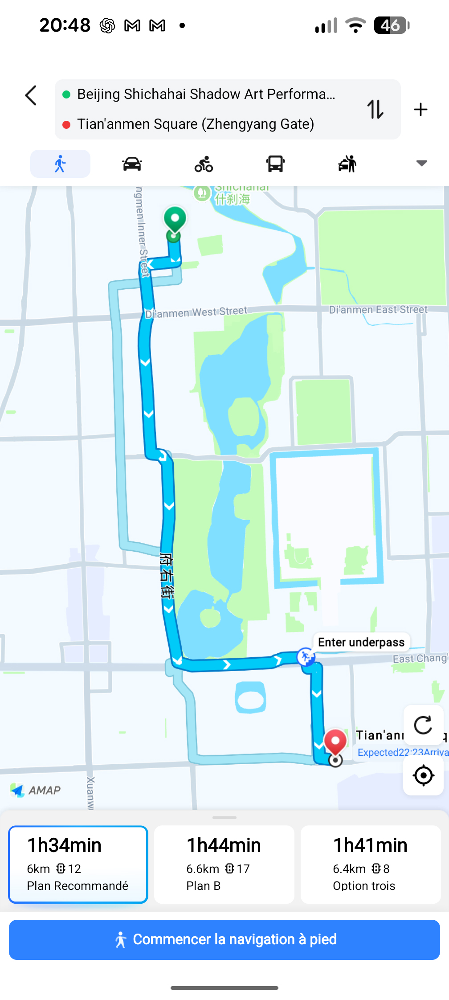
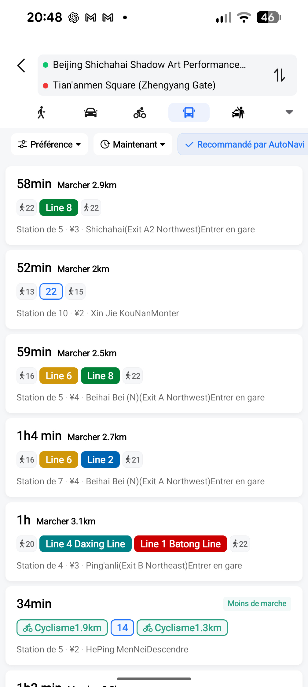
💳 Alipay
Alipay est sans doute l'application la plus indispensable du voyage. Elle sert à payer avec un QR Code, à utiliser Didi, à régler de nombreuses petites dépenses et à accéder à certains services. Nous l'avons utilisée plusieurs dizaines de fois par jour.
WeChat est l'application de messagerie incontournable en Chine. Elle permet aussi d'utiliser WeChat Pay et d'accéder à des mini-programmes nécessaires à certaines réservations, par exemple pour Tian'anmen ou certaines attractions touristiques.
🚕 Didi
Didi est l'équivalent chinois d'Uber. Les prix sont généralement très faibles. L'application peut être utilisée directement depuis Alipay, ce qui évite parfois d'installer Didi séparément.
🚄 Trip.com
Trip.com nous a servi pour réserver des trains (plus facilement qu'avec 12306) et parfois certaines visites. Son interface en français ou en anglais simplifie beaucoup les démarches, notamment pour les voyageurs qui ne lisent pas le chinois.
🚅 12306
12306 est l'application officielle des chemins de fer chinois. Elle permet de réserver directement les billets de train, mais son utilisation avec un passeport étranger peut être plus complexe que Trip.com.
🌍 Google Translate
Même si nous apprenons le chinois depuis plusieurs années, Google Translate nous a souvent aidés à traduire des menus, à comprendre certains panneaux ou à communiquer ponctuellement. La traduction instantanée par appareil photo est particulièrement pratique.
🔐 Astrill VPN
Astrill VPN a été notre VPN durant tout le séjour. Il nous a permis d'accéder aux principaux services occidentaux lorsque cela était nécessaire.
🤖 ChatGPT, Gemini et Copilot
Les applications d'intelligence artificielle ne sont pas seulement des outils de traduction. Elles peuvent expliquer un monument, commenter une visite, traduire une inscription, comprendre le fonctionnement d'un appareil ou donner un éclairage historique en quelques secondes.
💳 PaiementAlipay, WeChat Pay, QR Codes et cartes bancaires ›
En Chine, le QR Code est de très loin le principal moyen de paiement. Les deux applications indispensables sont Alipay et WeChat Pay.
Une carte bancaire internationale, Visa ou Mastercard, peut être enregistrée dans chacune d'elles. Le fonctionnement est simple : soit vous scannez le QR Code du commerçant et saisissez le montant, soit le commerçant scanne votre propre QR Code.
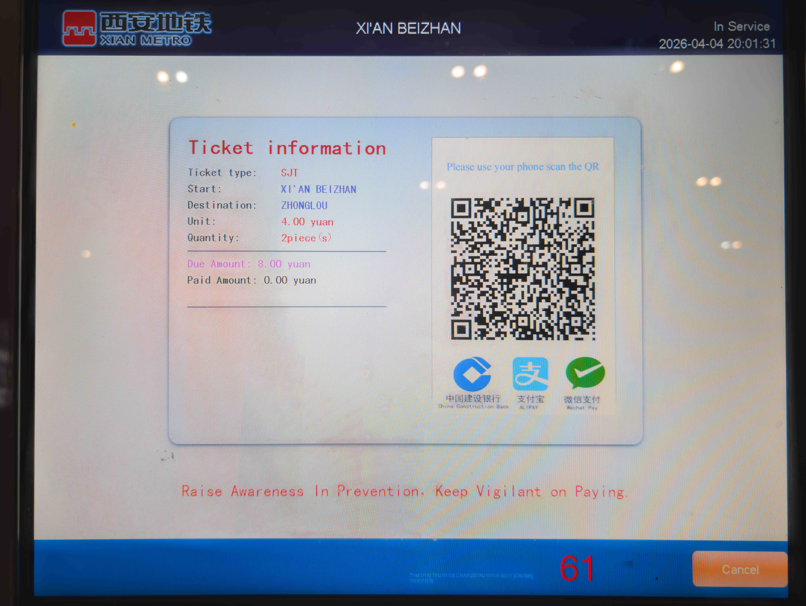
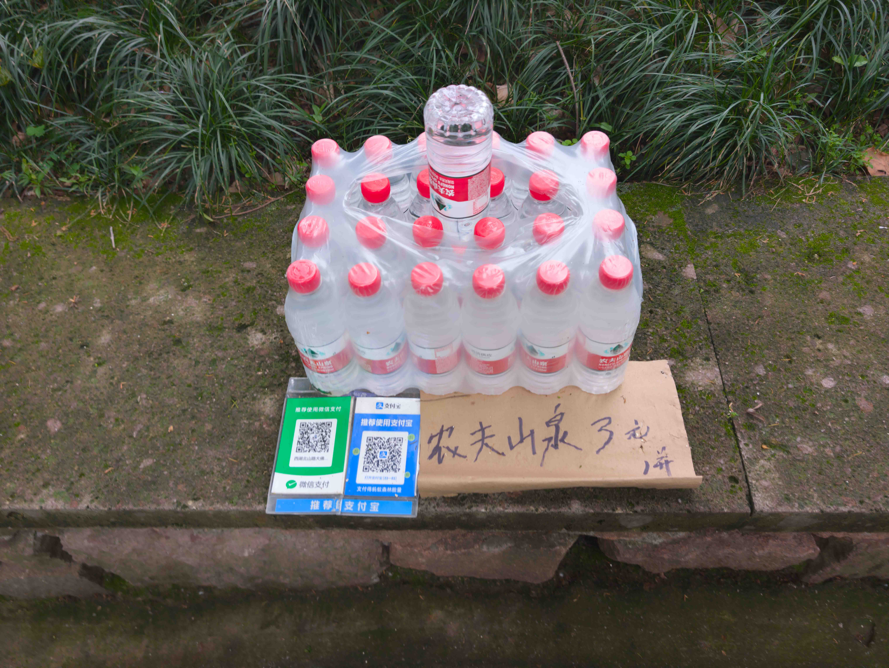
Ce système est utilisé absolument partout, aussi bien dans les grands magasins que chez les vendeurs de rue, et même pour les offrandes dans certains temples.
À Pékin et Shanghai, la carte Visa est également acceptée dans beaucoup de commerces. Elle permet même de régler directement les trajets de métro : il suffit de présenter la carte bancaire à l'entrée puis à la sortie.
💶 Retirer des espècesUne précaution utile malgré les paiements numériques ›
Dans les grandes villes, il est très facile de retirer des espèces dans un distributeur automatique. Pendant les dix-huit premiers jours de notre voyage, ces espèces ne nous ont pourtant servi à rien : nous payions tout avec WeChat Pay ou Alipay.
C'est à notre arrivée à Shanghai que nos applications de paiement ont décidé de ne plus fonctionner, en raison d'une « suspicion de fraude ». Heureusement, les cartes de paiement étaient acceptées presque partout à Shanghai puis à Pékin, et nos espèces nous ont également été utiles.
🚄 Voyager en trainRéservation, passeport, gares chinoises et trains à grande vitesse ›
Réserver
L'application officielle est 12306. S'y inscrire avec un passeport étranger n'est pas toujours simple. Les billets sont généralement mis en vente 15 jours avant le départ.
Une excellente alternative est Trip.com. On peut y réserver plus longtemps à l'avance. Trip.com reste soumis aux mêmes règles que les particuliers, mais dès que les ventes ouvrent sur 12306, la plateforme effectue automatiquement la réservation pour votre compte.
Le billet
En réalité, il n'y a pratiquement plus de billet papier. Votre passeport devient votre billet de train. Il est présenté à l'entrée de la gare, lors de l'accès au quai et parfois lors d'un contrôle à bord.
La gare
Les gares chinoises sont immenses. Certaines possèdent plusieurs halls d'attente et, dans les grandes villes, il existe souvent plusieurs gares principales : gare du Nord, du Sud, de l'Est ou de l'Ouest. Lorsqu'on les cherche dans Amap, dans le métro ou sur Didi, il est donc indispensable d'identifier précisément la bonne gare.
| Français | Pinyin | Chinois |
|---|---|---|
| Nord | běi | 北 |
| Sud | nán | 南 |
| Est | dōng | 东 |
| Ouest | xī | 西 |
Par exemple, Beijing North Railway Station, Beijing Bei et 北京北 désignent tous la gare de Pékin-Nord. De même, Beijing South correspond à 北京南, et Xi'an North à 西安北.
Pour accéder au quai, il faut ensuite repérer la porte d'embarquement indiquée sur les panneaux de départ. Ces panneaux sont souvent affichés principalement en chinois. Connaître l'écriture chinoise de sa destination facilite donc grandement le repérage. Le numéro du train, par exemple G88 ou D305, est également indiqué.
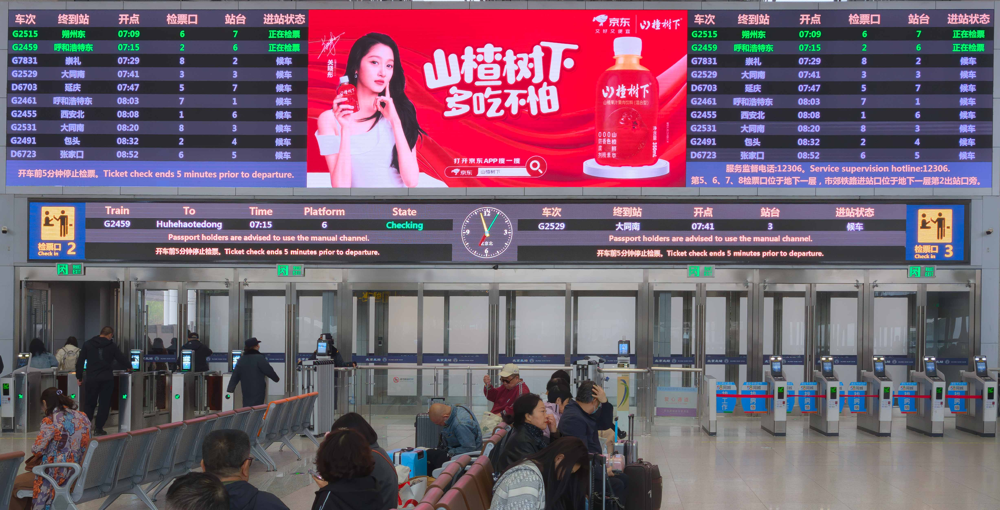
L'accès au quai n'ouvre généralement qu'une quinzaine de minutes avant le départ. Une fois les contrôles effectués, l'embarquement est rapide et les trains partent presque toujours à l'heure.
Confort, vitesse et ponctualité
Les trains que nous avons pris étaient toujours des trains à grande vitesse. En Chine, il faut distinguer le type de service, indiqué par une lettre comme G, D ou C, et le type de rame, par exemple CRH ou CR400.
| Type | Nom chinois | Vitesse maximale en service |
|---|---|---|
| G | 高铁 (Gāotiě) | 350 km/h |
| D | 动车 (Dòngchē) | 250 km/h, parfois 160 km/h |
| C | 城际 (Chéngjì) | 200 à 350 km/h selon les lignes interurbaines |
| Famille | Nom | Vitesse commerciale |
|---|---|---|
| CRH1 / CRH2 / CRH5 | Hexie (和谐号) | 250 km/h |
| CRH2C / CRH3 | Hexie | 350 km/h |
| CRH380A/B/C | Hexie | 350 km/h |
| CR200 | Fuxing (复兴号) | 160 km/h |
| CR300 | Fuxing | 250 km/h |
| CR400AF / BF | Fuxing | 350 km/h |
| CR450AF / BF | Nouvelle génération | 400 km/h, mise en service en cours |
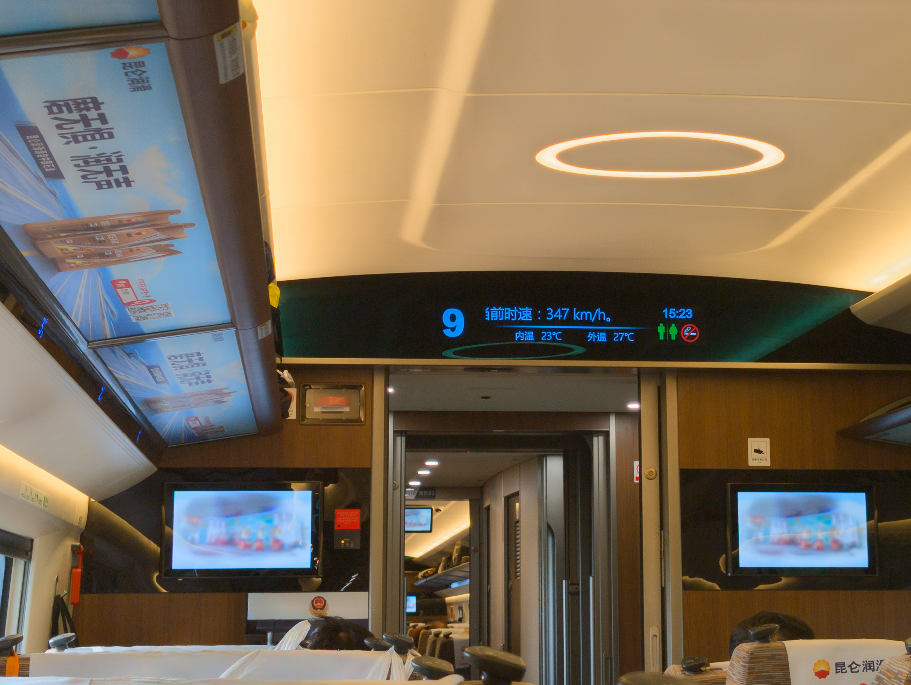
🚇 Voyager en métroRéseaux modernes, automates, tickets et sorties de station ›
Dans toutes les grandes villes que nous avons visitées — Pékin, Shanghai, Xi'an, Nankin ou Hangzhou — le réseau de métro est dense, moderne et très efficace.
Pour préparer un trajet, nous utilisions Amap, qui indique les correspondances, le temps de parcours et souvent le numéro ou la lettre de la sortie à utiliser une fois arrivé.
Pour acheter un ticket, il faut sélectionner la station de destination sur un distributeur automatique, puis payer avec Alipay, WeChat Pay ou parfois une carte bancaire. Selon les villes, le ticket prend la forme d'une carte ou d'un jeton.
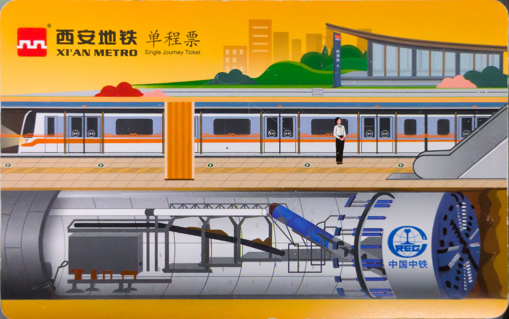
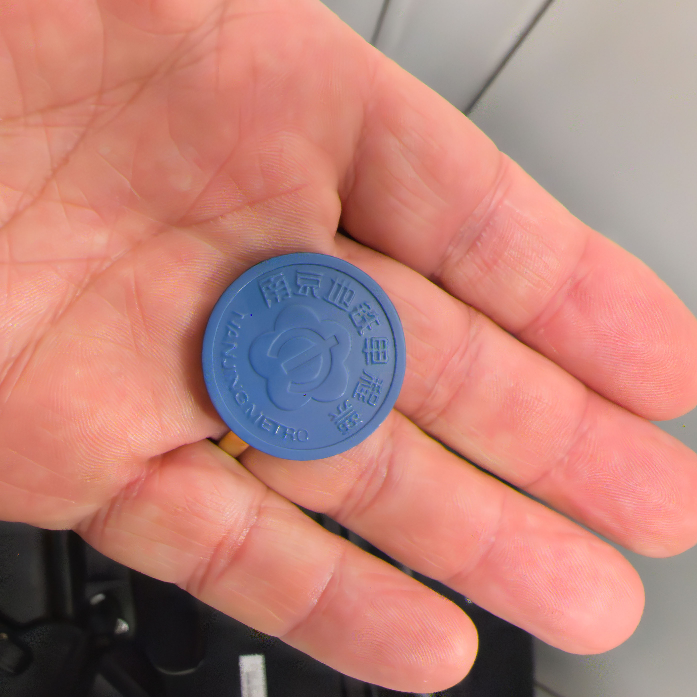
À l'arrivée, il suffit d'insérer la carte ou le jeton dans le portillon de sortie. Compte tenu du faible coût des trajets, nous n'avons pas pris de carte multi-trajets.
🚕 DidiL'alternative chinoise à Uber ›
En Chine, Uber n'existe pas. Son équivalent est Didi, dont le fonctionnement est quasiment identique. Les prix sont généralement très faibles.
L'application peut être utilisée directement depuis Alipay, sans installer l'application Didi elle-même, ce qui simplifie beaucoup les choses. Les chauffeurs ne parlent généralement pas anglais, mais comme l'itinéraire est déjà indiqué dans l'application, cela ne pose pas de difficulté particulière.
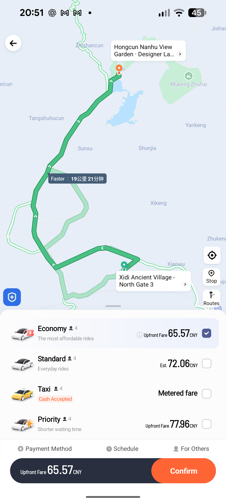
🔒 Les contrôles de sécuritéMétro, gares, sites sensibles et sacs aux rayons X ›
En Chine, les contrôles sont omniprésents. Chaque fois que l'on prend le métro, tous les bagages, même un simple sac à dos, passent au scanner. Le même contrôle est effectué à l'entrée de toutes les gares.
Ces contrôles sont rapides et font partie du quotidien. Ils ne doivent pas inquiéter les visiteurs.
🛂 Le passeportHôtels, police et billet de train ›
Le passeport est le document le plus important du voyage. Chaque hôtel le photographie afin d'effectuer la déclaration obligatoire auprès de la police.
Il sert également de billet de train. Nous vous conseillons donc de toujours l'avoir sur vous, plutôt que de le laisser à l'hôtel.
🎫 Réservations de visitesMini-programmes WeChat, Trip.com et aide extérieure ›
L'accès à la place Tian'anmen, la visite du mausolée de l'empereur Qin Shi Huang et de l'armée enterrée de Xi'an, ainsi que de nombreuses autres attractions, peuvent se réserver à l'aide des mini-programmes WeChat.
Pour cela, il peut être utile de se faire aider par une personne chinoise, ou même par une IA capable de traduire les écrans. Certaines attractions peuvent aussi se réserver sur Trip.com.
🗣️ Parler et se faire comprendreChinois appris, traduction vocale et menus ›
Nous apprenons le chinois depuis de nombreuses années. Malgré cela, la langue restant complexe, nous avons parfois eu recours à Google Translate pour communiquer.
Les fonctions de traduction vocale ou de traduction instantanée à partir de l'appareil photo sont particulièrement utiles dans les restaurants ou pour lire certains panneaux.
🤖 L'intelligence artificielleUn compagnon de voyage inattendu ›
Que ce soit ChatGPT, Gemini ou Copilot, l'intelligence artificielle est devenue un véritable compagnon de voyage.
Elle permet d'expliquer ce que l'on observe, d'obtenir des informations historiques sur un monument, de traduire une inscription, de commenter en direct la visite d'un temple ou d'un musée, et même de comprendre le fonctionnement d'un appareil dont les commandes sont uniquement en chinois.
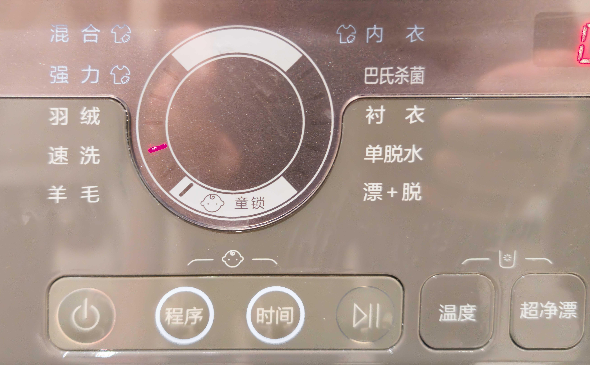
💰 Quelques références de prixHôtels, train, repas et Didi ›
- Hôtels : prix moyen sur l'ensemble du séjour : 48 € par nuit, pour des établissements de catégorie 3 à 4 étoiles.
- Train : Shanghai → Pékin en TGV : environ 90 €.
- Repas : voir les cartes présentées dans la rubrique « La nourriture ».
- Didi : Hongcun → Xidi : 46 CNY.
Les trajets urbains en Didi coûtent souvent entre 10 et 30 CNY, soit seulement quelques euros.
💧 HygièneEau du robinet et bouteilles d'eau ›
Il est généralement déconseillé de boire l'eau du robinet en Chine. On peut acheter des bouteilles d'eau partout, très facilement et à bas prix.
🔌 Recharger ses équipementsPrises, adaptateur et batterie externe ›
En Chine, les prises électriques peuvent être de type A, C ou I. Il faut donc prévoir un adaptateur.
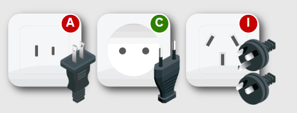
Par ailleurs, en Chine plus que partout ailleurs, le téléphone devient votre meilleur ami : pour payer, traduire, trouver un itinéraire ou réserver un trajet. Avoir avec soi une batterie externe n'est donc pas un luxe.
🏮 Les souvenirs de l'époque maoïsteObjets, portraits et traces du passé ›
À de nombreux endroits, nous avons vu, souvent chez des antiquaires professionnels ou occasionnels, des portraits de Mao, de Zhou Enlai ou d'autres vestiges du passé.
4️⃣ La Chine superstitieusePourquoi le chiffre 4 disparaît parfois ›
En Chine, vous trouverez rarement un quatrième étage sur le panneau de certains ascenseurs, et parfois pas de chambre portant le numéro 4.
Le chiffre 4 (四, sì) est considéré comme porte-malheur, car sa prononciation est très proche de celle du mot « mort » (死, sǐ). Pour cette raison, de nombreux immeubles suppriment le 4e étage, les étages 14, 24 ou 34, ou évitent les numéros de chambre contenant un 4.
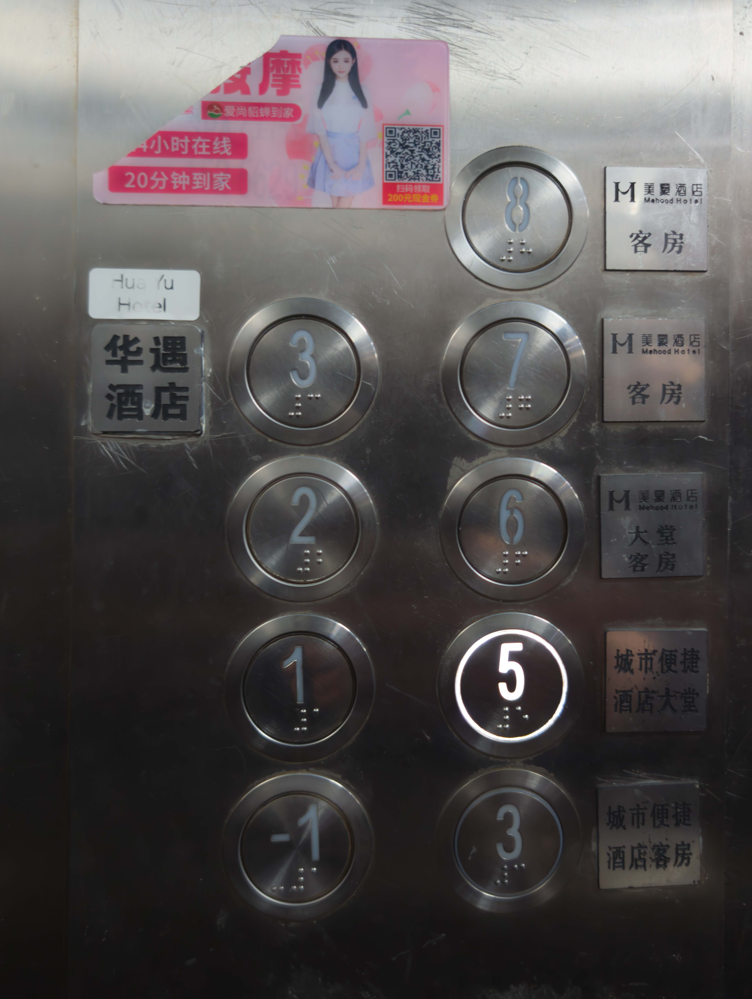
👴 Les seniors de 65 ans et plusGratuité fréquente dans les sites touristiques ›
L'accès à de nombreux sites touristiques s'est avéré gratuit pour les personnes de plus de 65 ans. Lorsqu'un agent aperçoit la date de naissance sur le passeport, il applique souvent spontanément le tarif préférentiel.
Le terme chinois 老人 (lǎorén) signifie « personne âgée ».